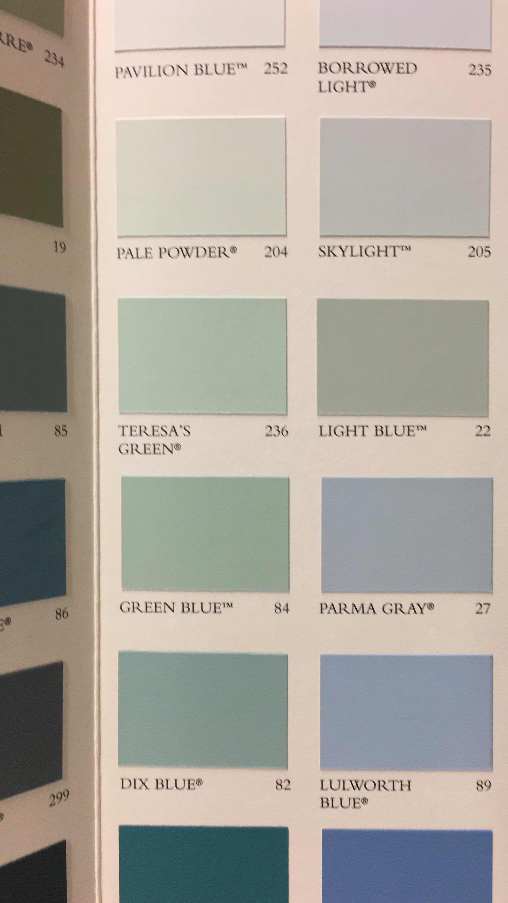

1/24/19, 2:32 PM
GLAD U LIKED
ALSO Have been still feeling rly good about the Jake thing
Still no caring
Also: chance’s my own thing
I think baby drive it down is such a good song for the two of our drives heheh
1/24/19, 6:30 PM
haha so I loved taking a bunch of random classes I found fun in college and now i’m realizing i have no actual marketable expertise?! bc i’ve never gotten deep enough into anything because I’m scared i’ll get bored of it wow haha!
I want to do research this summer but I literally cannot think of a single thing I would want to research
I was thinking maybe something about cenotaphs and the night sky idk
1/25/19, 6:53 AM

I miss your pets
1/25/19, 9:25 AM
open.spotify.commy favs on this:
DD Form 214 (JPEG), We gonna make it (Jadakiss), Sketch for a Summer (Durutti), Black effect (Carters), Resolve (alfa mist), Window (Noname), fell asleep with a vision (Spirit of something), haven’t finished listening tho
oh and my contribution to this scam
1/26/19, 12:47 PM
Lol I’m going out tonight what even
Yesterday, 6:56 AM

Yesterday, 3:45 PM
Hey is everything ok?? No need to respond if so- just want to check in and let you know that if you’re stressed I’m always here to talk :-)
Yesterday, 5:48 PM
♥i think pale powder and lulworth blue are my favorites, esp. in combination. have you heard chance’s song on the hamilton soundtrack? it’s a little different from his other recent work.
hesitated to ask about jake after you left U.S, because i was hoping the distance would be vvvv helpful (andmentioning him might duck it up)!! does it feel more permanent?
why cenotaphs?? i like the night sky idea—lots of continuity of that in your work